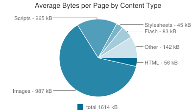
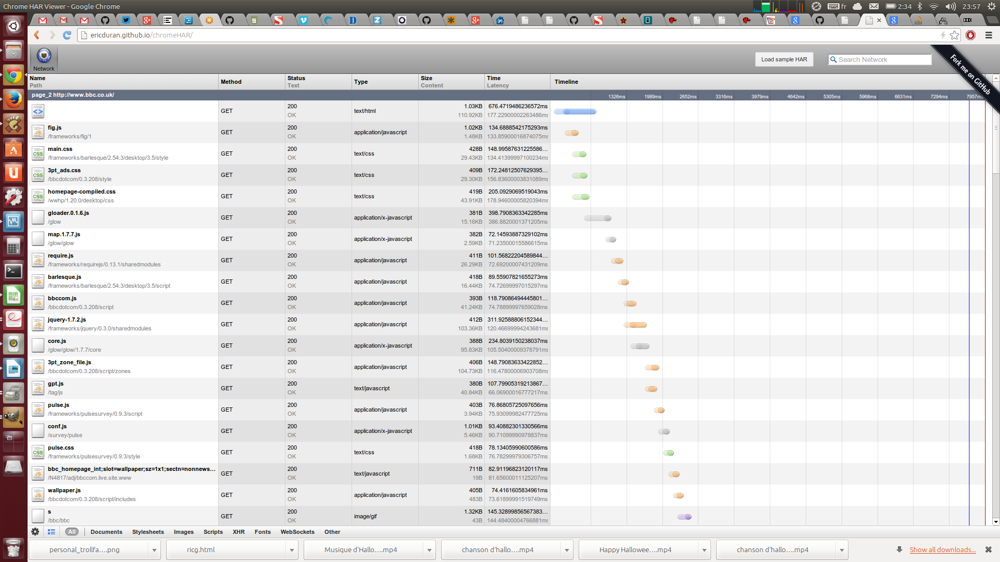

Responsive Images Techniques & Beyond
Velocity EU - London, November 2013
Who????


- Picture prototype
- srcset implementation
Responsive images problem
Load properly dimensioned images that fit the page's design in an efficient manner
Why bother?

A trip down memory lane
In the begining - mobile only sites


Then - iPhone

Then - RWD happened

Images?
Not a problem!
EAZZZZZZY!!!

Well...

This led to BLOAT!!!

72% Serve same resources

Which resources?
Images - over 60%

How much can be saved?
Up to™ 72% image data savings

Retina only increases these gaps
The difference between low end, small devices and high-end wide devices increases

How can we measure?
Sizer Soze

What??
Measures the difference between current images & perfectly sized images
How does it work?
- Download a page using phantomJS
- Look at image dimensions
- Download the images
- Resize to displayed dimensions
SSAAS
sizersoze.orgDemo time!
Give it a try!
But please be patient!
If you want to help out
github.com/yoavweiss/Sizer-Soze github.com/ResponsiveImagesCG/Sizer-Soze-frontendOK, bandwidth is important
But It's getting better every year
Soon this whole issue will go away
Rendering performance
Decoding speed impact
- x2 images take x? to decode
- x6 images take x??? to decode
Resize impact
- An order of magnitude slower
- x2 images take x? to decode
- x6 images take x??? to decode
- Need more data!
- Very small resizes can be handled differently
But it's not on the main thread
It still takes CPU time
- Scrolling lag observed
- Battery life may suffer
Memory impact
Browsers store encoded, decoded and resized image in memoryDecoded image memory footprint
4 bytes per pixel - W×H×4Larger images cost more
| Dimensions | Memory footprint | Diff |
| 800x800 | 2,560,000 | |
| 400x400 | 640,000 | 1,920,000 |
| 200x200 | 160,000 | 480,000 |
Responsive Images Problem
2 major use cases
Resolution switching
Serving different image dimensions to different devices

DPR switching
Sending retina images only to retina screensviewport switching
Sending images adapted to their display dimensionsArt Direction
Getting images to match layout


Other use cases
- Monochrome
- Image format fallback
Constraints
Must play well with preloaderUse cases doc
usecases.responsiveimages.orgReleased as a W3C WG note
So let's hack around the problem
AKA:
But first...
Who's afraid of the big, bad preloader
AKA
- PreloadScanner
- Speculative parser
- Look-ahead scanner
"The greatest browser optimization of all times"
- Steve Souders
What does it do?
- Scans the document when the parser is blocked
- Figures out resources that need to be downloaded
- Adds them to the download queue
How important is that???
SmashingMag - With preloader
 DCL - 2390; PLT - 3585
DCL - 2390; PLT - 3585
Using chromeHAR
SmashingMag - No preloader
 DCL - 5395; PLT - 7193
DCL - 5395; PLT - 7193
BBC - With preloader
 DCL - 5022; PLT - 5980
DCL - 5022; PLT - 5980
Using chromeHAR
BBC - Without preloader
 DCL - 7660; PLT - 7957Going back to images
People came up with some JS based ideas
None of them really worked

Turns out
You can't modify resources with JS before the preloader
Early days techniques
Cookie based
Doesn't work on first loadBase href modification
Terminates in-flight preloaded requestsSwitching src value
Double download regardless of preloader...This led to FRUSTRATION

Working techniques
Cookie based
e.g. adaptive-images.comExample
<script>
document.cookie = 'width=' + screen.width +
';height='screen.height +
';dpr=' + devicePixelRatio;</script>
<img src="cat.jpg"> Advantages
- No need for markup change
- Images download fast
- No double download
- Image displayed when JS fails
Disadvantages
- On first page load, user will get wrong image
- Cachebility issues
- Same domain restriction
- Server side solution which may or may not fit your stack
- Server-side logic/directory structure to map viewport dimensions to image dimensions
- Resizes are not taken into account
LQIP
Low Quality Image PlaceholderExample
<img src="cat_lq.jpg" data-normal-src="cat.jpg" data-hq-src="cat_hq.jpg">
...
<script>
var images = document.getElementsByTagName("img");
var imagesLen = images.length;
var hd = screen.width > 800 || devicePixelRatio > 1;
for(var i = 0; i < images.length; i++)
images[i].src = hd?
images[i].dataset.hqSrc:
images[i].dataset.normalSrc;
</script> Advantages
- LQ images download fast. Prog JPEG-like
- Can work with no server side logic
- LQ image displayed when JS fails
Disadvantages
- Double download, so some BW waste
- Markup contains multiple resources
- Final quality image download starts late (near DCL)
Picturefill
Based of the<picture> markup pattern
Example
<span data-picture>
<span data-media="screen and (min-width:1600px)"
data-src="wide.jpg"></span>
<span data-media="screen and (min-width:800px)"
data-src="middle.jpg"></span>
<span data-media="screen and (min-width:400px)"
data-src="narrow.jpg"></span>
<span data-src="tiny.jpg"></span>
<noscript> <img src="fallback.jpg"></noscript>
</span>
...
<script src="picturefill.js"></script>Example #2
<span data-picture>
<span data-media="screen and (min-width:1600px)"
data-srcset="wide1x.jpg 1x,
wide2x.jpg 2x"> </span>
<span data-media="screen and (min-width:800px)"
data-srcset="middle1x.jpg 1x,
middle2x.jpg 2x"> </span>
<span data-media="screen and (min-width:400px)"
data-srcset="narrow1x.jpg 1x,
narrow2x.jpg 2x"> </span>
<span data-srcset="tiny1x.jpg 1x,
tiny2x.jpg 2x"></span>
<noscript> <img src="fallback.jpg"></noscript>
</span>
...
<script src="picturefill.js"></script> What does it do?
- Meant for art-direction
- Can do viewport switching when abused
- DPR switching using data-srcset in an experimental branch
Advantages
- No double download
- With scripts disabled, there's a fallback
- Using MQs which is a familiar pattern to authors
Disadvantages
- Markup contains multiple resources
- MQs in the markup can get verbose
- Image download starts only after DCL
x-picture
Web components based solutionExample
<html>
<head>
<script src="x-picture.js"></script>
</head>
<body>
<x-picture>
<source media="screen and (min-width:1600px)"
srcset="wide1x.jpg 1x, wide2x.jpg 2x">
<source media="screen and (min-width:800px)"
srcset="middle1x.jpg 1x, middle2x.jpg 2x">
<source media="screen and (min-width:400px)"
srcset="narrow1x.jpg 1x, narrow2x.jpg 2x">
<source srcset="tiny1x.jpg 1x, tiny2x.jpg 2x">
<noscript> <img src="fallback.jpg"></noscript>
</x-picture>
</body>
</html>Advantages vs. Picturefill
- Slightly less verbose
- Image download can start as soon the the image is parsed (in supporting browsers)
Disadvantages vs. Picturefill
- Depends on Polymer
Mobify.js
A whole new level of Bat-sh*t-loco-insane™ hackWhat?
Enables script access to HTML document before preloder or parser see itHow?????
- Inline script at the doc head injects a <plaintext> tag and downloads mobify.js
- Browser treats the rest of the document as text
- HTML chunks are read & processed as they're downloaded
- Once HTML is done, document.open() and document.write() the new HTML
- Page load starts over, preloader and all
Advantages
- No markup changes needed
- No double download
- Preloader works (after a delay)
- No JS means no optimization, but everything works
Disadvantages
- Blocking JS at the page's start
- Entire HTML is downloaded before parsing start
- Compatibility issues
- Lots of invasive JS may be hard on legacy devices
- JS failure after plaintext injection can result in a blank page
BBC - imager.js
A mix-and-match of previous techniques- A fallback low-quality image
- Uses RAF to poll for DOM changes
- Waits until layout to download
- Page resize may trigger resource change
Service Worker

What?
- Originally, an offline API
- Enables URL rewriting in the browser
- Implementation underway in FF & Chrome
Let's use that to hack responsive images!!!

Unfortunately
- Doesn't (yet?) support first load
- Can't access
window - Browser support will take time
Compressive images
- No markup, no JS
- Take 2x images
- Compress them to LQ
- Let browser handle resize
- Looks good on retina
- Not bigger than 1x image
Downsides
- Memory footprint
- Decoding and resizing speed
- "Looks good" is subjective
- Only DPR switching, up to 2x
Bandwidth testing
Active bandwidth testing
e.g. foresight.js- Download an object and measure
- Download images according to measured BW
- Adds a blocking, useless resource
Should I do that???

Passive bandwidth testing
- Measure HTML download time - NavTiming
- Download images according to measured BW
- Less bad, but still not a good idea
Related stuff
- Image resizing services
- CMS plugins
- Grunt plugins
How to decide?
- Can I modify the page at all?
- Can I modify the markup to contain the image data?
- Can I control the server-side serving the images?
Performance take-aways
- Using
srcresults in a download - Start downloading images ASAP
- Measure perf impact: network, memory and decoding
Proposed standard Solutions
srcsetattribute<picture>element- Client-Hints headers
- Src-N
- Response Image Container
srcset
- Proposed by Apple, adopted by the WHATWG
- Extends
<img>to include multiple resources - Addresses mainly resolution switching
Current implementation
DPR switching only
<img src="cat.1X.jpg"
srcset="cat.1x.jpg 1x,
cat.2x.jpg 2x">Implemented (not yet shipped) in WebKit and Blink
Rough consensus around the syntax
srcset's viewport switching syntax
<img src="cat.1X.jpg"
srcset="cat.1x.jpg 1x 320w,
cat.2x.jpg 2x 320w,
cat.2x.jpg 1x 640w,
cat.4x.jpg 2x 640w,
cat 4x.jpg 1x 1280w">Not many fans for this part of the syntax
<picture>
- Proposed by Bruce Lawson, adopted by RICG
- Adopts
<video>and<audio>markup patterns - Targeted at art-direction
- Specifies resources using
<source>and MQs - First matching resource downloaded and displayed
Art direction using picture
<picture>
<source media="screen and (min-width:1600px)"
srcset="wide1x.jpg 1x,
wide2x.jpg 2x">
<source media="screen and (min-width:800px)"
srcset="middle1x.jpg 1x,
middle2x.jpg 2x">
<source media="screen and (min-width:400px)"
srcset="narrow1x.jpg 1x,
narrow2x.jpg 2x">
<source srcset="tiny1x.jpg 1x,
tiny2x.jpg 2x">
<img src="fallback.jpg">
</picture>src-N
- Proposed by Tab Atkins and John Mellor
- Got the RICG's support
src-N's DPR switching
x-urls - Basically srcset's DPR syntax
Example
<img src-1="pic.png, picHigh.png 2x, picLow.png .5x">src-N's art direction
Multiple attributes, each can start with an MQExample
<img src-1="(max-width: 400px) pic-small.jpg"
src-2="(max-width: 1000px) pic-medium.jpg"
src="pic-large.jpg"
alt="Obama talking to a soldier in hospital scrubs."> viewport-urls
Variable sized imagesComposed of
- Breakpoint definition
- Resource & dimension list
Linearly variable image
<img src-1="100%; pic1.png 160, pic2.png 320, pic3.png 640,
pic4.png 1280, pic5.png 2560">Multiple breakpoint variable image
<img src-1="100% (640px) 50% (960px) 33%;
160.jpg 160, 320.jpg 320, 480.jpg 480, 640.jpg 640,
960.jpg 960, 1280.jpg 1280, 1920.jpg 1920"> Breakpoint definition
Officially: size-viewport-list
100% (640px) 50% (960px) 33%;Resource & dimension list
Officially: size-based-urls
160.jpg 160, 320.jpg 320, 480.jpg 480, 640.jpg 640,
960.jpg 960, 1280.jpg 1280, 1920.jpg 1920Multiple breakpoints with srcset
<img srcset="
320.jpg .89x 400w, 480.jpg 1.33x 400w, 640.jpg 1.78x 400w,
480.jpg 1.04x 520w, 640.jpg 1.39x 520w, 960.jpg 2.09x 520w,
640.jpg 1.1x 639w, 960.jpg 1.66x 639w, 1280.jpg 2.2x 639w,
320.jpg 0.89x 800w, 480.jpg 1.33x 800w, 640.jpg 1.78x 800w,
480.jpg 1.09x 959w, 640.jpg 1.45x 959w, 960.jpg 2.18x 959w,
320.jpg 0.89x 1200w, 480.jpg 1.33x 1200w, 640.jpg 1.78x 1200w,
480.jpg 1.09x 1440w, 640.jpg 1.45x 1440w, 960.jpg 2.18x 1440w,
480.jpg 0.86x 1920w, 640.jpg 1.14x 1920w, 960.jpg 1.71x 1920w,
1280.jpg 2.29x 1920w, 640.jpg 0.86x, 960.jpg 1.29x, 1280 1.71x,
1920 2.57x ">Client Hints
- Proposed by Ilya Grigorik
- HTTP based content-negotiation solution
- Client sends hints/capabilities
- Server side logic decides on resource
Request headers
CH-DPR
CH-RW
Resource WidthImplicitly relies on src-N's viewport-url
Response headers
DPR
Server confirmation header Used for intrinsic image sizingOpt-in only
Not sent on initial HTML request
Responsive Image Container
- File format approach
- A "layer" per resolution
- Both resolution switching and art-direction
Resolution switching

336x635

106x200


211x400


336x635
Art-direction

770x512

200x200

400x288

770x512
Advantages
- Markup left untouched
- A single file per image
- Better for post-download dimensions changes
disadvantages
- Touches many layers. Will take time
- Decoding performance???
- Fetching mechanism network performance???
Questions?
Oh... One more thing
Progressive image download

Thanks!
RWD - http://www.flickr.com/photos/axbom/6263640150/sizes/o/in/photostream/
Bloat - http://www.flickr.com/photos/lorenjavier/5013332959/sizes/l/in/photostream/
CNN - http://mobile.smashingmagazine.com/2010/11/03/how-to-build-a-mobile-website/
Wap 2 site - http://www.coffeeshopdave.com/Helio_WAPv2.html
http://lego.wikia.com/wiki/Service_Crew_Member